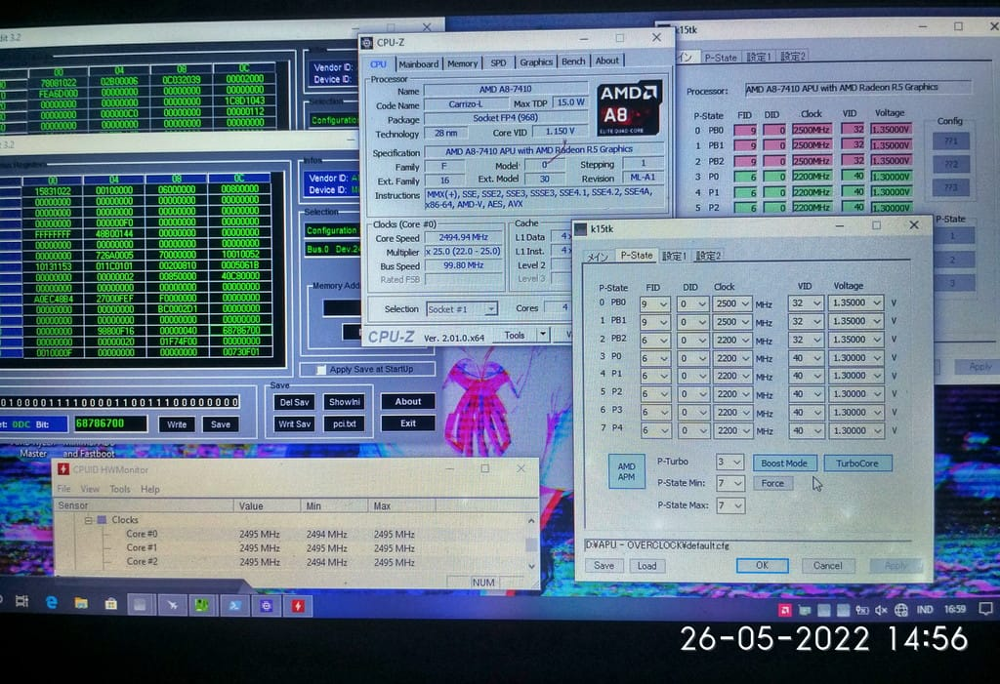
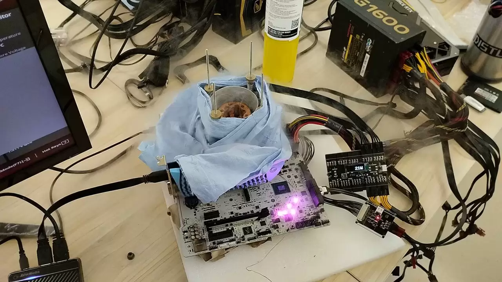

Overclocking Chipset APU
Salah satu aktivitas favorit saya adalah melakukan overclocking pada sistem PC. Di sini saya melakukan pengujian intensif menggunakan berbagai tool monitoring untuk mencari batas maksimal performa CPU dan GPU. Selalu menarik mengatur voltase dan frekuensi untuk mendapatkan FPS ekstra tanpa overheat.

Overclock Extreme
Salah satu sesi eksperimen ekstrem saya, di mana sistem mengalami overheat karena setting voltase dan frekuensi yang terlalu tinggi. Dari sini saya belajar pentingnya pendinginan dan manajemen daya yang baik untuk menjaga kestabilan sistem.

Servis Elektronik
Selain utak-atik software, saya juga rutin mengerjakan servis hardware seperti memperbaiki rangkaian regulator, ganti IC, atau pasang kapasitor. Aktivitas ini jadi salah satu sumber pemasukan dan latihan tangan agar tetap terampil.

Membuat Host Server untuk Game
Sebagai gamer teknikal, saya sering mengalami masalah latency saat bermain game luar negeri yang server-nya berada di luar Indonesia. Karena itu, saya berinisiatif membuat host server sendiri di dalam negeri. Tujuannya simpel: supaya gameplay lebih lancar tanpa delay. Proyek ini sekaligus menjadi ajang belajar tentang routing, port mapping, serta optimasi resource server untuk kebutuhan multiplayer.

Servis Motor
Waktu luang saya manfaatkan juga untuk membongkar dan memperbaiki motor sendiri. Saya percaya bahwa rasa ingin tahu dan semangat belajar tak terbatas hanya pada elektronik, tapi juga pada sistem mekanik seperti kendaraan. Dari sistem kelistrikan sampai injektor, saya pelajari secara otodidak.

Berkuliah
Meskipun lebih sering mengutak-atik teknologi, saya tetap menjalani kewajiban sebagai mahasiswa aktif. Saya serius mengikuti perkuliahan, terutama mata kuliah yang berkaitan dengan jaringan, sistem digital, dan pemrograman.

Membuat Script untuk Overclock
Biar praktis dan lebih fleksibel, saya membuat sendiri script untuk overclocking CPU/GPU berbasis CLI atau automation tools. Ini mempermudah saya untuk melakukan tuning otomatis tergantung beban kerja atau kebutuhan performa.

Membuat Konfigurasi Server Pribadi
Saya mengelola beberapa server pribadi yang berjalan menggunakan konfigurasi khusus, termasuk sistem trojan-go/V2Ray untuk tunneling dan VPN. Konfigurasi ini penting untuk menjaga stabilitas dan keamanan koneksi saat eksperimen jaringan.